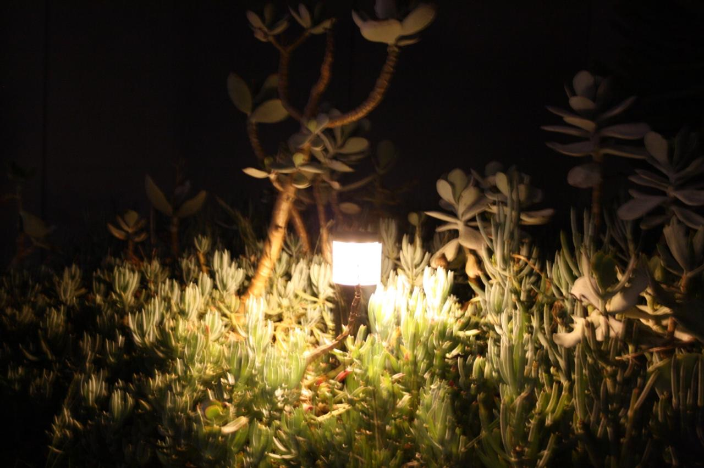

I build things that think — and now one that moves.
A personal AI assistant I wrote in Python. It runs entirely on my laptop — no cloud, no API bill, and it still works when the wifi doesn't. It keeps my tasks and memory, searches the web, and picks which model to think with depending on what I asked it.
The same assistant, getting a body. A small wheeled robot with a display and a voice, so the thing I talk to stops living behind a window and starts sharing the room.
Six degrees of freedom, a servo per finger, pressure sensors in the fingertips. Still spec and reading — the first real step is one finger that moves, not five that don't.
Three reasons, and privacy is only one. It costs nothing to run, nobody else can discontinue it, and it works on a plane. The trade is speed — my laptop has no dedicated graphics, so it thinks slowly, and I've had to care a lot about which model does which job.
History of Ideas is part of my course and it's the one I argue about most. Ibn Sina was doing cognitive science in the eleventh century. If you're building something meant to reason, it helps to know how long people have been arguing about what reasoning even is.
Finishing. I get excited by the next idea while the current one is at eighty percent. Naming it out loud helps more than I expected — and I've stopped letting myself start a fourth version of anything.
Planning feels like progress and mostly isn't. An afternoon of building teaches me what a week of reading wouldn't, usually by breaking in a way I couldn't have predicted. I still overthink — I've just learned the fastest way out is to make something.
Nothing, and that's the point. Laufey was the first concert I ever went to — Rod Laver, July 2026 — and I'm apparently in the top 1% of her listeners. Engineering all day needs a counterweight that isn't a screen. Hers is the album that gets played while I'm soldering.

My first concert ever: Rod Laver Arena, 31 July 2026, A Matter of Time tour. I still have the ticket.
Jazz-leaning, orchestral, unhurried — the opposite of debugging.
I care more about how a thing works than about using it, and fields borrow from each other far more than they admit.